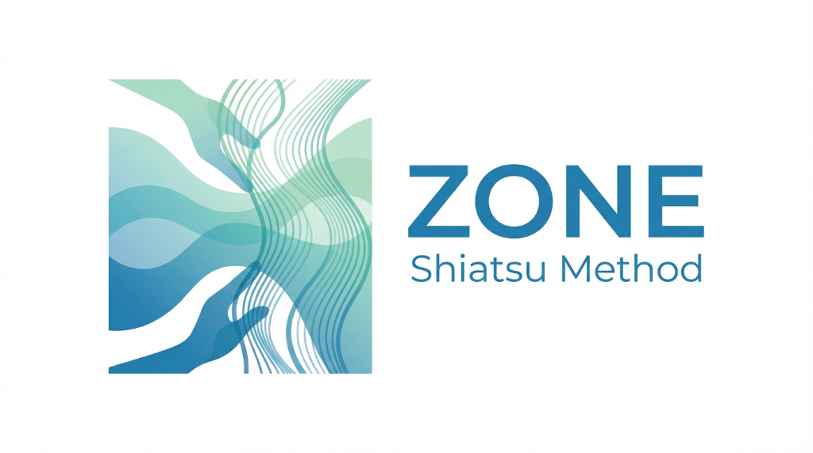

【基本編】動画再生リスト
概念
概念1:東洋医学の概念
概念2:陰陽の話
概念3:五行の話
概念4:五行の補足イメージ
概念5:一は全 全は一
概念6:音叉の例え
総論
総論1:ZONE指圧法の大枠
総論2:陰陽虚実の補足
総論3:ツボの取り方、単位
総論4:全経絡の流れ
総論5:エリアの話
総論6:絡穴取穴(手)
総論7:絡穴取穴(足)
総論8:dのエリアの取穴
総論9:ZONE指圧法のやり方
総論10:取穴エリア手・陰経
総論11:取穴エリア手・陽経
総論12:取穴エリア足・陰経
総論13:取穴エリア足・陽経
総論14:左右の決定
総論15:dの左右の決定
総論16:よくある例え【道路】
総論17:指圧法共通項目おさらい・レシピの見方
こぼれ話1:鍼と灸の話
接続
接続1:接続・連接という技
接続2:接続やってみよう(レシピ)
接続3:接続やってみよう(実技)
こぼれ話2:気の話【放電】
相克
相克1:相克という技
相克2:相克やってみよう(レシピ)
相克3:相克やってみよう(実技)
こぼれ話3:気のあれこれ(1)
相克4:接続相克やってみよう(レシピ)
相克5:接続・相克やってみよう(実技)
こぼれ話4:気のあれこれ(2)
季節
季節1:季節という技
季節2:季節やってみよう(レシピ)
季節3:接続・季節・相克やってみよう(実技)
こぼれ話5:気の話【気圧】
補強
補強1:補強という技
補強2:補強やってみよう(レシピ)
補強3:接続・補強・相克やってみよう(実技)
こぼれ話6:気の話【邪気】
牽引瀉法
牽引瀉法1:牽引瀉法という技
牽引瀉法2:牽引瀉法の取穴
まとめ
5つの基本技を終えて(おさらいと目安回数の話)